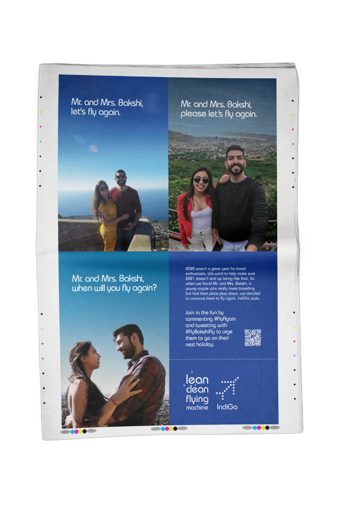
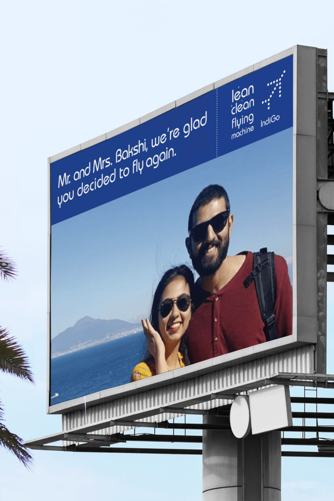

What If Saturdays - is an event series that explores alternative futures. The branding uses tabs (inspired by indents found on physical folders to identify file names) as an identification mark. It acts as a tool to talk about varied intangible topics and hosts them under an umbrella theme - 'What If ?'.


